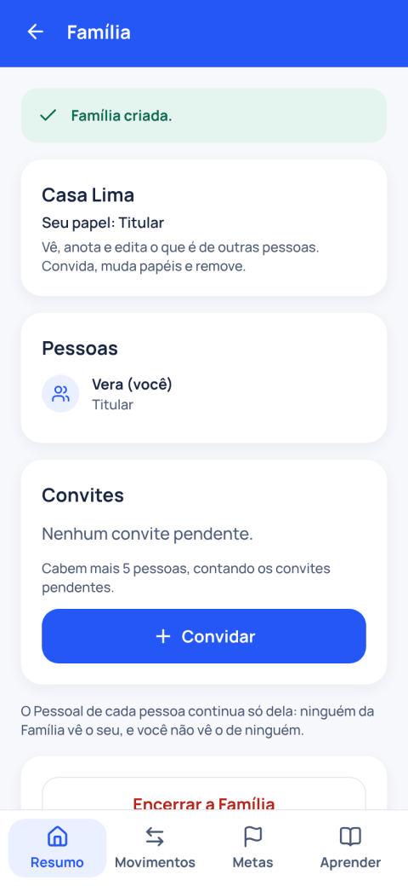

Na web, hoje
A versão web da Clarevo já funciona no navegador do celular ou do computador. Abrir a versão web.
Um passeio pelos recursos do app, com telas da demonstração. Os dados nas telas são fictícios, e uma conta nova começa vazia.
Em breve na App Store e no Google Play.
A versão web da Clarevo já funciona no navegador do celular ou do computador. Abrir a versão web.
Em breve O app para iPhone e Android será publicado na App Store e no Google Play. Alguns recursos, como os lembretes e a leitura do QR Code pela câmera, são do app para celular.
Quem administra o benefício de uma empresa usa um painel que existe só na web. Veja Para empresas.
A explicação de abertura de cada recurso é a do guia de uso do próprio app, e os pontos abaixo dela resumem o que ele faz hoje. A legenda de cada tela lembra que os dados são de demonstração.
Mostra, de uma vez, o que você recebeu, o que pagou e o que ainda vai vencer no mês.

Registra um gasto que você já pagou ou um recebimento que já aconteceu, com valor, data e categoria.

Preenche o gasto com os dados de uma nota fiscal, lendo o QR code, o PDF ou a chave de acesso.
Reúne as contas que ainda vão vencer. Quando você paga, marca como paga e o valor passa a contar em Pago.
Cadastra uma vez o que se repete todo mês, como aluguel e escola, ou o que você paga em parcelas. Cada mês vira uma conta a pagar.
Para contas que vencem uma vez por ano ou em poucas parcelas, como IPVA e IPTU. A Clarevo cria a conta do mês certo, dois meses antes de vencer.

Cadastra seus cartões de crédito para anotar as compras na fatura. A compra só entra em Pago quando você paga a fatura.

Mostra o Recebido ou o Pago de cada mês em um gráfico de linha, com média e mediana, e deixa tirar um mês da comparação sem mexer em nenhum lançamento.
Reúne, em quatro abas, as categorias do Pago em barras ou bolhas, a evolução, os próximos meses e o orçamento do mês escolhido.

Acompanha o que você está juntando para uma viagem, um curso ou imprevistos, mostrando só o que você registrou como guardado.
Pergunta se você consegue guardar um valor por mês e monta um plano em etapas com os seus números, sem contar rendimento.

Reúne até 6 pessoas para ver e anotar as contas da casa em conjunto. O Pessoal de cada pessoa continua só dela.

Explicações curtas sobre contas, juros e o próprio app, com exemplos fictícios e fontes. Funciona no aparelho, sem registrar o que você lê nem o que busca.
Contas rápidas com os valores que você informa. Nada é gravado.
Um aviso no dia anterior ao vencimento de cada conta, no app para celular. Na tela bloqueada, o aviso não mostra valor nem descrição.
Uma tela no próprio app mostra quem tem acesso aos registros: no Pessoal, só você, entre as pessoas do app.

Quem recebe o convite da empresa aceita pelo link. O app mostra a empresa, o plano e desde quando vale.

Saiba mais em Segurança e privacidade.